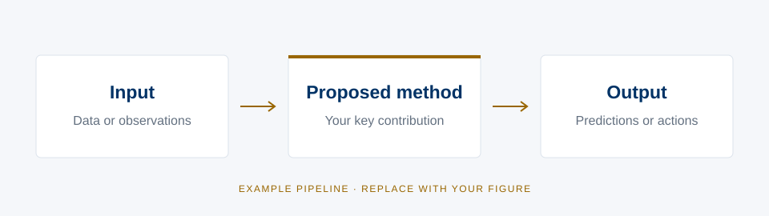

Abstract
Replace this paragraph with your paper’s abstract. Introduce the problem and explain why it matters, identify the limitation of existing approaches, and summarize your key idea. Describe the evaluation setting and the most important findings. Finish with the broader significance of the work. Keep this section self-contained so that readers can understand the contribution before exploring the figures and experiments below.
Problem
What makes this problem difficult? Describe the setting, the assumptions, and the gap that motivates your work. Use the figure below to make the research question concrete.
Method
Introduce the main idea of your approach. Explain the role of each component and how they work together. Replace the example pipeline with your own architecture, algorithm, or system overview.

Simulation Performance
Describe the benchmarks, evaluation metrics, and comparison methods. Explain the main trend shown in each plot and report the evidence that supports your conclusions.
Real-World Performance
Experiment 1
Introduce the first experimental setting. State the task, conditions, and the behavior readers should look for in the demonstration.
Experiment 2
Use a second experiment to show generalization, robustness, or a different task. Include representative successes and limitations where appropriate.
Takeaways
- State the main conceptual or methodological contribution in one sentence.
- Summarize the strongest experimental evidence supporting the approach.
- Describe the practical implications, limitations, or next research direction.
BibTeX
@misc{authorYEARshorttitle,
title = {Your Paper Title Goes Here With a Descriptive Subtitle},
author = {First Author and Second Author and Third Author and Corresponding Author},
year = {YEAR},
note = {Replace with the publication venue or preprint information}
}